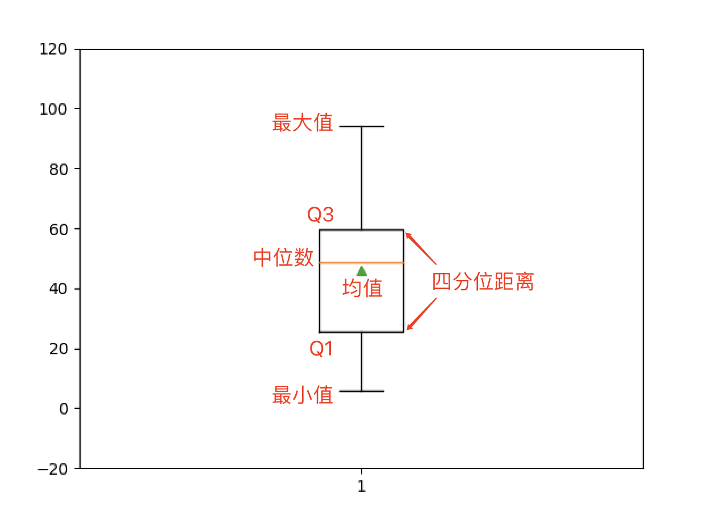

NumPy的应用-2
数组对象的方法
获取描述统计信息
描述统计信息主要包括数据的集中趋势、离散程度和频数分析等，其中集中趋势主要看均值和中位数，离散程度可以看极值、方差、标准差等，详细的内容大家可以阅读《统计思维系列课程01：解读数据》。
array1 = np.random.randint(1, 100, 10)
array1
输出：
array([46, 51, 15, 42, 53, 71, 20, 62, 6, 94])
计算总和、均值和中位数。
代码：
print(array1.sum())
print(np.sum(array1))
print(array1.mean())
print(np.mean(array1))
print(np.median(array1))
print(np.quantile(array1, 0.5))
说明：上面代码中的
mean、median和quantile分别是 NumPy 中计算算术平均值、中位数和分位数的函数，其中quantitle函数的第二个参数设置为0.5表示计算50%分位数，也就是中位数。
输出：
460
460
46.0
46.0
48.5
48.5
极值、全距和四分位距离。
代码：
print(array1.max())
print(np.amax(array1))
print(array1.min())
print(np.amin(array1))
print(array1.ptp())
print(np.ptp(array1))
q1, q3 = np.quantile(array1, [0.25, 0.75])
print(q3 - q1)
输出：
94
94
6
6
88
88
34.25
方差、标准差和变异系数。
代码：
print(array1.var())
print(np.var(array1))
print(array1.std())
print(np.std(array1))
print(array1.std() / array1.mean())
输出：
651.2
651.2
25.51862065237853
25.51862065237853
0.5547526228777941
绘制箱线图。
箱线图又称为盒须图，是显示一组数据分散情况的统计图，因形状如箱子而得名。 它主要用于反映原始数据分布的特征，还可以进行多组数据分布特征的比较。
代码：
plt.boxplot(array1, showmeans=True)
plt.ylim([-20, 120])
plt.show()
输出：

值得注意的是，对于二维或更高维的数组，在获取描述统计信息时，可以通过名为axis的参数指定均值、方差等运算是沿着哪一个轴来执行，axis参数不同，执行的结果可能是大相径庭的，如下所示。
代码：
array2 = np.random.randint(60, 101, (5, 3))
array2
输出：
array([[72, 64, 73],
[61, 73, 61],
[76, 85, 77],
[97, 88, 90],
[63, 93, 82]])
代码：
array2.mean()
输出：
77.0
代码：
array2.mean(axis=0)
输出：
array([73.8, 80.6, 76.6])
代码：
array2.mean(axis=1)
输出：
array([69.66666667, 65. , 79.33333333, 91.66666667, 79.33333333])
代码：
array2.max(axis=0)
输出：
array([97, 93, 90])
代码：
array2.max(axis=1)
输出：
array([73, 73, 85, 97, 93])
再看看绘制箱线图，对于二维数组每一列都会产生一个统计图形，如下所示。
代码：
plt.boxplot(array2, showmeans=True)
plt.ylim([-20, 120])
plt.show()
输出：
说明：箱线图中的小圆圈用来表示离群点，也就是大于$\small{Q_3 + 1.5 \times IQR}$或小于$\small{Q_1 - 1.5 \times IQR}$的值。公式中的常量
1.5可以通过绘制箱线图的boxplot函数的whis参数进行修改，常用的值是1.5和3，修改为3通常是为了标识出极度离群点。
需要说明的是，NumPy 的数组对象并没有提供计算几何平均值、调和平均值、去尾平均值等的方法，如果有这方面的需求，可以使用名为 scipy 的三方库，它的stats模块中提供了这些函数。此外，该模块还提供了计算众数、变异系数、偏态、峰度的函数，代码如下所示。
代码：
from scipy import stats
print(np.mean(array1)) # 算术平均值
print(stats.gmean(array1)) # 几何平均值
print(stats.hmean(array1)) # 调和平均值
print(stats.tmean(array1, [10, 90])) # 去尾平均值
print(stats.variation(array1)) # 变异系数
print(stats.skew(array1)) # 偏态系数
print(stats.kurtosis(array1)) # 峰度系数
输出：
46.0
36.22349548825599
24.497219530825497
45.0
0.5547526228777941
0.11644192634527782
-0.7106251396024126
其他相关方法概述
all()/any()方法：判断数组是否所有元素都是True/ 判断数组是否有为True的元素。astype()方法：拷贝数组，并将数组中的元素转换为指定的类型。reshape()方法：调整数组对象的形状。dump()方法：保存数组到二进制文件中，可以通过 NumPy 中的load()函数从保存的文件中加载数据创建数组。代码：
array.dump('array1-data')
array3 = np.load('array1-data', allow_pickle=True)
array3
输出：
array([46, 51, 15, 42, 53, 71, 20, 62, 6, 94])
tofile()方法：将数组对象写入文件中。
array1.tofile('res/array.txt', sep=',')
fill()方法：向数组中填充指定的元素。flatten()方法：将多维数组扁平化为一维数组。代码：
array2.flatten()
输出：
array([1, 2, 3, 4, 5, 6, 7, 8, 9])
nonzero()方法：返回非0元素的索引。round()方法：对数组中的元素做四舍五入操作。sort()方法：对数组进行就地排序。代码：
array1.sort()
array1
输出：
array([ 6, 15, 20, 42, 46, 51, 53, 62, 71, 94])
swapaxes()和transpose()方法：交换数组指定的轴和转置。代码：
array2.swapaxes(0, 1)
输出：
array([[1, 4, 7],
[2, 5, 8],
[3, 6, 9]])
代码：
array2.transpose()
输出：
array([[1, 4, 7],
[2, 5, 8],
[3, 6, 9]])
tolist()方法：将数组转成 Python 中的list。代码：
print(array2.tolist())
print(type(array2.tolist()))
输出：
[[1, 2, 3], [4, 5, 6], [7, 8, 9]]
<class 'list'>